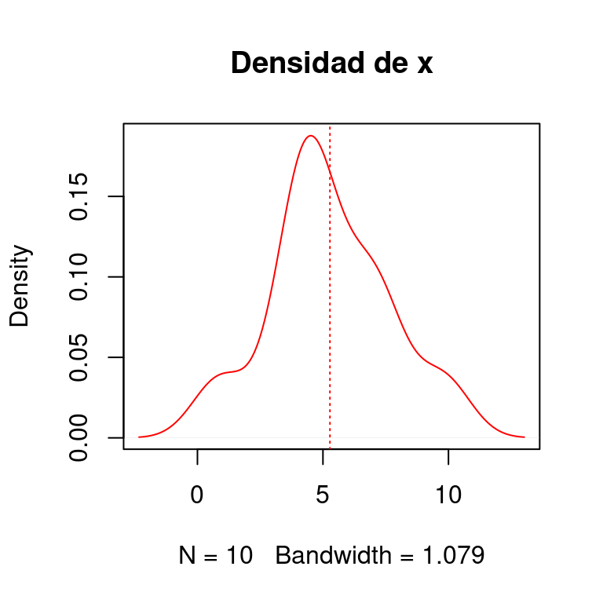
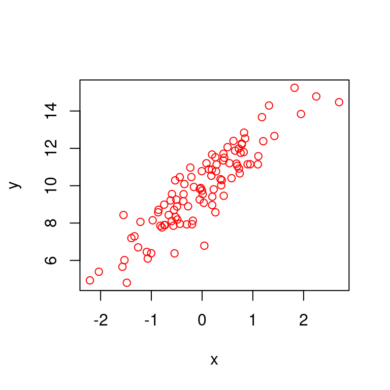
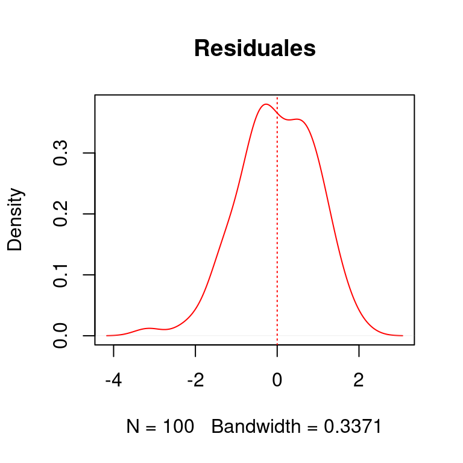

5 Unidad II - Utilizando spatstat
5.1 Análisis exploratorio
Antes de proponer un modelo para los datos de ocurrencia, es buena práctica realizar un análisis exploratorio. En realidad, el modelo que propongamos dependerá en buena medida de este análisis exploratorio. Los análisis exploratorios que yo hago comprenden una serie de pasos:
- Probar si los datos de ocurrencia cumplen son independientes unos de otros o si están autocorrelacionados
- Ver la respuesta de la intensidad de puntos ante las diferentes variables ambientales que queremos incorporar en el modelo
- Medir la correlación entre las diferentes variables
- Con base en los puntos 2 y 3 proponer un conjunto de modelos alternativos (más sobre este punto abajo)
5.1.1 Independencia y autocorrelación
Se dice que los diferentes puntos son independientes entre sí, si el número de vecinos promedio de cada punto como función de la distancia, sigue una distribución Poisson (figura 5.1). Con esto en mente hay varios escenarios posibles, que en promedio cada punto tenga más vecinos de lo esperado o que tenga menos. En el primer caso, se dice que los puntos están agregados, pues un punto tiende a atraer a otros. En el segundo, los puntos están segregados, o sea que un punto tiende a mantener a otros puntos lejos de sí. El primer caso, de independencia, suele ocurrir cuando los puntos están distribuidos aleatoriamente (figura 5.2).
Figura 5.1: Número de vecinos como función de la distancia en un proceso de puntos.
Figura 5.2: Ejemplo de procesos de puntos de izquierda a derecha: segregado, aleatorio y agregado (reproducido de Baddeley y Rubak 2016)
Existe una serie de pruebas gráficas y estadísticas para medir autocorrelación. Aquí nos enfocaremos en el uso de la prueba de envolturas K de Ripley. La implementación de esta prueba en spatstat genera unos intervalos de confianza alrededor de la expectativa del número de vecinos por medio de simulación. La figura 5.3 muestra los tres escenarios de segregación, aleatorio y agrecación.

Figura 5.3: Gráfica de la prueba K de Ripley implementada en spatstat. De izquierda a derecha: funciones de Ripley para puntos segregados, aleatorios y agregados.
5.1.1.1 Análisis de autocorrelación en R con spatstat
Haremos este análisis de autocorrelación con el mismo proceso de puntos que formateamos anteriormente. La función de spatstat para la prueba de Ripley es envelope, y los argumentos que requiere son 1) el proceso de puntos a analizar, 2) la función con que se medirá autocorrelación (Kest para \(K\) de Ripley) y 3) el número de simulaciones. Normalmente, para un nivel de significancia \(P=0.05\), se utilizan 39 simulaciones, el cual deberá aumentar si el umbral de significancia buscado es más estricto (\(P = 0.01\), p. ej.).
K <- envelope(puntos.ppp, fun = Kest, nsim = 39)## Generating 39 simulations of CSR ...
## 1, 2, 3, 4, 5, 6, 7, 8, 9, 10, 11, 12, 13, 14, 15, 16, 17, 18, 19, 20, 21, 22, 23, 24, 25, 26, 27, 28, 29, 30, 31, 32, 33, 34, 35, 36, 37, 38, 39.
##
## Done.Mientras la función corre, R imprime la última simulación completada, y el objeto que se obtiene puede graficarse con el método por defecto plot:
plot(K)Figura 5.4: Gráfica de la función K de Ripley para el proceso de puntos analizado. Las sombras en gris muestran los intervalos de confianza al 95%. La línea roja a guiones representa la expectativa teórica (K teórica) en caso de que el proceso de puntos sea aleatorio, y la línea negra sólida es la función de Ripley para el proceso de puntos (la K observada). El eje de las x representa distancia (en grados) y las y el número promedio de vecinos de cada punto.
5.1.2 Análisis gráfico de las respuestas al medio ambiente.
Para este análisis simularé una base de datos de ocurrencia donde la probabilidad de observarlos sea inversamente proporcional a la distancia de una centroide pre definido. Con base en ello, podremos ver cómo cambia la intensidad de puntos en realción a los diferentes valores de cada variable.
5.1.2.1 Simulación de datos de presencia
Utilizaré las mismas variables que para el ejercicio anterior de formateo, y el centroide estará localizado en la media aritmética de cada capa:
centroide <- cellStats(s, mean)Para calcular la distancia al centroide, necesitamos la covarianza entre las diferentes capas, de modo que la calculamos con la función cov. Hay implementaciones más robustas en el paquete MASS, para nuestros propósitos pedagógicos cov es suficiente. Comenzamos entonces, transformando el stack en una tabla:
s.df <- data.frame(rasterToPoints(s))
covar <- cov(s.df[, 3:5])Posteriormente, utilizando el centroide y la matriz de covarianza, generamos las distancias utilizando las tres columnas del objeto s.df que contienen los valores de las variables ambientales:
md <- mahalanobis(s.df[, 3:5], center = centroide, cov = covar)Y transformamos las distancias al centroide en una capa raster:
md.r <- rasterFromXYZ(data.frame(s.df[, 1:2], md))
plot(md.r)
Figura 5.5: Distancia Mahalanobis al centroide de las capas.
Para simular las ocurrencias, transformaré la capa de distancias exponencialmente, para obtener una superficie probabilística:
md.exp <- exp(-0.5*md.r)
plot(md.exp)Figura 5.6: Distancia Mahalanobis transformada exponencialmente para simular presencias. Verde indica mayor probabilidad de ocurrencia.
Para simular las presencias usaré el mismo método que anteriormente, pero en esta ocasión la probabilidad determinará las celdas en que habrá puntos:
set.seed(182)
puntos.2 <- dismo::randomPoints(mask = md.exp,
n = 200,
prob = T)## Warning in .couldBeLonLat(x, warnings = warnings): CRS is NA. Assuming it is
## longitude/latitudepuntos.2 <- data.frame(puntos.2)
puntos.2$x <- puntos.2$x + rnorm(200, 0, 0.05)
puntos.2$y <- puntos.2$y + rnorm(200, 0, 0.05)
plot(md.exp); points(puntos.2)#### Graficación y análisis de las respuestas
Para continuar con el análisis, necesitamos formatear el objeto puntos.2 como ppp:
puntos.2.ppp <- ppp(x = puntos.2$x,
y = puntos.2$y,
window = win,
check = F)Recordemos que el objeto win lo generamos en la sección de formateo de este tutorial. Para el análisis de las respuestas necesitamos crear otro objeto, que contiene los conteos de cuadratura, es decir, cuántas presencias por unidad espacial, con la función pixelquad que requiere de dos argumentos, el proceso planar de puntos y la ventana de trabajo en formato owin:
Q <- pixelquad(X = puntos.2.ppp, W = as.owin(win))Dado que las capas ya están también formateadas como im, podemos ahora sí continuar con el análisis de las respuestas con la función plotQuantIntens. Esta función generará unos gráficos en pdf que deberemos revisar después de correrla. Para cargar la función, haremos igual que con las anteriores. Puedes descargar la función aquí. Esta función requiere de varios argumentos:
- La lista de imágenes que se usarán para ver cómo cambia la intensidad de puntos en relación a cada variable
- El número de cuantiles en que se cortará cada variable para representar la intensidad en el espacio
- El objeto de cuadratura (
Q) - El objeto con los puntos en formato
ppp - El nombre del directorio donde se guardará el archivo pdf
- El nombre del archivo
source("../Funciones-spatstat/plotQuantIntens.R")
plotQuantIntens(imList = s.im,
noCuts = 5,
Quad = Q,
p.pp = puntos.2.ppp,
dir = "",
name = "Responses-centroid")## png
## 2El archivo de gráficas que produce plotQuantIntens muestra en cada panel:
La variable analizada con el número de puntos en cada región de valores especificada por el argumento
noCutso número de cortesLa variable analizada con el proceso de puntos sobrepuesto
La respuesta de la intensidad de puntos a la variable analizada. En el eje de las \(x\) (horizontal), el valor de la variable, y en el eje de las \(y\) (vertical) la intensidad (número) de puntos.
La idea de este análisis es que podamos identificar a priori qué variables podemos incluir en el modelo y con qué tipo de relación. Por ejemplo, las variables 2 y 3 tienen respuestas claramente con forma de parábola invertida o de campana con uno que otro “tope”, por lo que podemos utilizar una fórmula polinomial de \(2^o\) grado (figura 5.7). Para la variable 1, sin embargo parece haber una región hacia el extremo derecho del eje \(x\) en la cual la intensidad vuelve a incrementar. Dado la intensidad de puntos tiende a aumentar nuevamente podríamos utilizar un término cúbico, pues una ecuación cúbica puede adquirir esta forma (figura 5.8).
curve(exp(1 + x - x^2), from = -3, 3)
Figura 5.7: Ecuación polinomial de 2o grado exponenciada.
Por otro lado, una ecuación polinomial de \(3^{er}\) grado:
curve(exp(1+ x - 2*x^2 + x^3), from = -1.5, to = 1.4 )Figura 5.8: Ecuación polinomial de 3er grado exponenciada.
5.1.3 Midiendo la correlación entre variables independientes
Cuando hacemos un análisis de regresión, en deseable que todas las variables independientes que incluyamos en un modelo sean ortogonales, es decir que no estén correlacionadas, que no sean predictoras una de otra. Al incluir variables independientes correlacionadas creamos un problema en el que no es posible medir la varianzade la variable dependiente que explican. Un ejemplo análogo en ANOVA, sería un experimento de dos factores con dos niveles cada uno, y por lo tanto para poder entender el efecto de cada factor con sus niveles necesitaríamos cuatro unidades experimentales como mínimo, 2 niveles del factor I \(\times\) 2 niveles del factor II. Si los factores fueran colineales, implicaría que sólo tendríamos por ejemplo, nivel \(A\) del factor I con nivel \(a\) del factor II, y nivel \(b\) del factor I con nivel \(b\) del factor II, siendo que requerimos de las combinaciones:\(Aa, Ab, Ba\) y \(Bb\).
Para medir la correlación entre pares de variables raster estimamos el coeficiente de correlación de Pearson, con la función pairs del paquete raster. Esta función compara todas las posibles combinaciones de pares de variables en el stack y produce un gráfico de dispersión para cada combinación:
pairs(s)## Warning in graphics::par(usr): argument 1 does not name a graphical parameter
## Warning in graphics::par(usr): argument 1 does not name a graphical parameter
## Warning in graphics::par(usr): argument 1 does not name a graphical parameter
## Warning in graphics::par(usr): argument 1 does not name a graphical parameter
## Warning in graphics::par(usr): argument 1 does not name a graphical parameter
## Warning in graphics::par(usr): argument 1 does not name a graphical parameterFigura 5.9: Prueba de correlación para todos los pares de variables.
Como podemos ver, de las variables propuestas sólo podemos utilizar dos de ellas en el mismo modelo, puesto que Var.1y Var.2 están correlacionadas. La correlación entre ellas es lineal, como puede verse en el gráfico de dispersión (1a columna 2a fila).
No hay una regla que indique qué coeficiente de correlación es aceptable para incluir en un mismo modelo, sin embargo, mientras más cercano a \(0\) y lejos de \(1\) ó \(-1\) es mejor. Ciertamente \(0.76\), puede ser considerada como alta correlación. Como regla general personal, si el número de variables con respuestas claras observadas con plotQuantIntens alto, podemos utilizar todas aquellas con \(r < 0.5\), si el número de variables es pequeño podemos permitirnos un poco más de libertad e incluir en un mismo modelo todas aquellas con \(r \leq 0.7\).
5.1.4 Propuesta de modelos alternativos
Anteriormente vimos que la intensidad de puntos (figura ??) tiene una clara res puesta de campana en relación a Var.2 y Var.3, y posiblemente Var.1. Por ello podemos proponer una serie de funciones polinomiales de 2o grado donde sólo estén presentes Var.1 y Var.3, y Var.2 y Var.3. Recordemos que con base en el análisis de correlación no debemos incluir a Var.1 y Var.2 en el mismo modelo (figura 5.9). De modo que, en sintaxis de R, las fórmulas propuestas del modelo (incluyendo una de 3er grado para Var.1):
~ Var.1 + Var.3 + I(Var.1^2) + I(Var.3^2)~ Var.1 + Var.3 + I(Var.1^2) + I(Var.1^3) + I(Var.3^2)~ Var.2 + Var.3 + I(Var.2^2) + I(Var.3^2)
La decisión de cuál de las fórmulas propuestas será la final con que trabajaremos, es material del próximo capítulo, por el momento veremos cómo se ajusta un ppm.
5.2 Ajustando un proceso de puntos
Aquí veremos cómo se ajusta un proceso de puntos. Como vimos en el capítulo anterior, los datos que analizamos consisten de la intensidad de puntos por unidad espacial, como función de un conjunto de predictores.
Los modelos que ajustaremos son aquellos que propusimos como producto del análisis exploratorio del capítulo anterior. Para ajustar un proceso de puntos Poisson, utilizamos la función ppm (por “point process model”) del paquete spatstat. Los argumentos que debemos incluir al llamar a la función son:
- El objeto que contiene el proceso de puntos
trendque corresponde a la fórmula del modelo- La lista de imágenes de pixeles que contiene las covariables que se utilizan en la fórmula (con los mismos nombres)
Para ajustar el modelo propuesto con la 1a fórmula propuesta tenemos:
m1 <- ppm(Q = puntos.2.ppp,
trend = ~ Var.1 + Var.3 + I(Var.1^2) + I(Var.3^2),
covariates = s.im)Para ver un resumen detallado del modelo ajustado, podemos utilizar la función summary del objeto creado m1, lo que imprimirá una tabla que muestra los coeficientes estimados, error para cada coeficiente, su significancia y otra información sobre el llamado a la función ppm y estadísticas de convergencia:
## Point process model
## Fitting method: maximum likelihood (Berman-Turner approximation)
## Model was fitted using glm()
## Algorithm converged
## Call:
## ppm.ppp(Q = puntos.2.ppp, trend = ~Var.1 + Var.3 + I(Var.1^2) +
## I(Var.3^2), covariates = s.im)
## Edge correction: "border"
## [border correction distance r = 0 ]
## --------------------------------------------------------------------------------
## Quadrature scheme (Berman-Turner) = data + dummy + weights
##
## Data pattern:
## Planar point pattern: 200 points
## Average intensity 8.57 points per square unit
## binary image mask
## 28 x 30 pixel array (ny, nx)
## pixel size: 0.167 by 0.167 units
## enclosing rectangle: [-104.92138, -99.92138] x [25.355693, 30.02236] units
## (5 x 4.667 units)
## Window area = 23.3333 square units
## Fraction of frame area: 1
##
## Dummy quadrature points:
## 32 x 32 grid of dummy points, plus 4 corner points
## dummy spacing: 0.1562500 x 0.1458333 units
##
## Original dummy parameters: =
## Planar point pattern: 1028 points
## Average intensity 44.1 points per square unit
## binary image mask
## 28 x 30 pixel array (ny, nx)
## pixel size: 0.167 by 0.167 units
## enclosing rectangle: [-104.92138, -99.92138] x [25.355693, 30.02236] units
## (5 x 4.667 units)
## Window area = 23.3333 square units
## Fraction of frame area: 1
## Quadrature weights:
## (counting weights based on 32 x 32 array of rectangular tiles)
## All weights:
## range: [0.0076, 0.0228] total: 23.3
## Weights on data points:
## range: [0.0076, 0.0114] total: 2.21
## Weights on dummy points:
## range: [0.0076, 0.0228] total: 21.1
## --------------------------------------------------------------------------------
## FITTED MODEL:
##
## Nonstationary Poisson process
##
## ---- Intensity: ----
##
## Log intensity: ~Var.1 + Var.3 + I(Var.1^2) + I(Var.3^2)
## Model depends on external covariates 'Var.1' and 'Var.3'
## Covariates provided:
## Var.1: im
## Var.2: im
## Var.3: im
##
## Fitted trend coefficients:
## (Intercept) Var.1 Var.3 I(Var.1^2) I(Var.3^2)
## -5.708681e+01 4.649718e-01 1.973027e-01 -1.195420e-03 -6.753759e-04
##
## Estimate S.E. CI95.lo CI95.hi Ztest
## (Intercept) -5.708681e+01 1.618153e+01 -88.802039552 -2.537159e+01 ***
## Var.1 4.649718e-01 1.498312e-01 0.171308062 7.586355e-01 **
## Var.3 1.973027e-01 9.701636e-02 0.007154105 3.874513e-01 *
## I(Var.1^2) -1.195420e-03 3.794566e-04 -0.001939142 -4.516991e-04 **
## I(Var.3^2) -6.753759e-04 3.126318e-04 -0.001288123 -6.262874e-05 *
## Zval
## (Intercept) -3.527899
## Var.1 3.103304
## Var.3 2.033705
## I(Var.1^2) -3.150348
## I(Var.3^2) -2.160291
##
## ----------- gory details -----
##
## Fitted regular parameters (theta):
## (Intercept) Var.1 Var.3 I(Var.1^2) I(Var.3^2)
## -5.708681e+01 4.649718e-01 1.973027e-01 -1.195420e-03 -6.753759e-04
##
## Fitted exp(theta):
## (Intercept) Var.1 Var.3 I(Var.1^2) I(Var.3^2)
## 1.612543e-25 1.591969e+00 1.218113e+00 9.988053e-01 9.993249e-01La parte del resumen del modelo ajustado que contiene los detalles de los coeficientes estimados es la que dice Fitted trend coefficients. La primera columna de esta tabla contiene los nombres de las variables, la segunda columna (Estimates) contiene el valor medio estimado de cada coeficiente. Las columnas 3-5 contienen el error estándar (S.E.), intervalo de confianza inferior y superior. La última columna (Ztest) contiene el valor de la probabilidad de que el intervalo a 95% contenga el valor de cero (0). Cuanto menos probable sea que contenga cero mejor.
Las predicciones del modelo podemos verlas con la función plot:
par(mfrow = c(1, 2))
plot(m1)Figura 5.10: Mapa de las predicciones del modelo. El panel izquierdo muestra la tendencia espacial y el derecho el error estándar de la tendencia estimada.
5.2.1 Selección del modelo
Ahora que ya sabemos ajustar un modelo, podemos proceder a ajustar los modelos de las fórmulas alternativas:
m2 <- ppm(Q = puntos.2.ppp,
trend = ~ Var.1 + Var.3 + I(Var.1^2) + I(Var.1^3) + I(Var.3^2),
covariates = s.im)
m3 <- ppm(Q = puntos.2.ppp,
trend = ~ Var.2 + Var.3 + I(Var.2^2) + I(Var.3^2),
covariates = s.im)El dilema con el que nos enfrentamos ahora es decidir con cuál modelo nos quedaremos. Hay una serie de criterios para tomar esta decisión que tienen que ver principalmente con:
- El cumplimiento de los supuestos estadísticos (independencia de puntos y análisis de residuales)
- El balance entre complejidad (cantidad de variables) y varianza explicada
- Estimación correcta de los efectos (coeficientes) y su significancia
Como vimos anteriormente, el primer supuesto es que los puntos deben ser independientes, por lo que podemos simular envolturas de Ripley para los modelos ajustados, y los residuales podemos analizarlos visualmente. El balance entre la complejidad y la varianza explicada podemos calcularlo con el criterio de información de Akaike.
5.2.1.1 Criterio de información de Akaike
Calcular el AIC (por sus siglas en inglés), es muy fácil en R. Solamente necesitamos la función AIC, y proporcionarle los modelos cuyos criterios querramos conocer:
AIC(m1)## [1] -473.2666AIC(m2)## [1] -473.0841AIC(m3)## [1] -468.7745La regla general es que cuanto más bajo sea el AIC, mejor, por lo que el modelo 3 (m3), parece tener la ventaja sobre el 1 y 2.
5.2.1.2 Estimación correcta de efectos
Dado que los MPPs son complejos es frecuente encontrarse con modelos que no pudieron ser ajustados correctamente, o sea que la rutina de optimización pudo encontrar los valores de los parámetros y calcular su significancia estadística. Por otra parte, cuando los efectos estadísticos pudieron ser calculados, nos interesa que la mayoría de estos sean significativamente diferentes de cero (\(P \leq 0.05\))
Si revisamos el resumen del modelo m2, veremos que aparecen algunos de los errores mencionados, y que resultan en la ausencia de estimaciones de significancia estadística (columna Ztest).
summary(m2)## Error in solve.default(M) :
## sistema es computacionalmente singular: número de condición recíproco = 1.96602e-20## Warning: Cannot compute variance: Fisher information matrix is singular## Error in solve.default(M) :
## sistema es computacionalmente singular: número de condición recíproco = 1.96602e-20## Warning: Cannot compute variance: Fisher information matrix is singular## Point process model
## Fitting method: maximum likelihood (Berman-Turner approximation)
## Model was fitted using glm()
## Algorithm converged
## Call:
## ppm.ppp(Q = puntos.2.ppp, trend = ~Var.1 + Var.3 + I(Var.1^2) +
## I(Var.1^3) + I(Var.3^2), covariates = s.im)
## Edge correction: "border"
## [border correction distance r = 0 ]
## --------------------------------------------------------------------------------
## Quadrature scheme (Berman-Turner) = data + dummy + weights
##
## Data pattern:
## Planar point pattern: 200 points
## Average intensity 8.57 points per square unit
## binary image mask
## 28 x 30 pixel array (ny, nx)
## pixel size: 0.167 by 0.167 units
## enclosing rectangle: [-104.92138, -99.92138] x [25.355693, 30.02236] units
## (5 x 4.667 units)
## Window area = 23.3333 square units
## Fraction of frame area: 1
##
## Dummy quadrature points:
## 32 x 32 grid of dummy points, plus 4 corner points
## dummy spacing: 0.1562500 x 0.1458333 units
##
## Original dummy parameters: =
## Planar point pattern: 1028 points
## Average intensity 44.1 points per square unit
## binary image mask
## 28 x 30 pixel array (ny, nx)
## pixel size: 0.167 by 0.167 units
## enclosing rectangle: [-104.92138, -99.92138] x [25.355693, 30.02236] units
## (5 x 4.667 units)
## Window area = 23.3333 square units
## Fraction of frame area: 1
## Quadrature weights:
## (counting weights based on 32 x 32 array of rectangular tiles)
## All weights:
## range: [0.0076, 0.0228] total: 23.3
## Weights on data points:
## range: [0.0076, 0.0114] total: 2.21
## Weights on dummy points:
## range: [0.0076, 0.0228] total: 21.1
## --------------------------------------------------------------------------------
## FITTED MODEL:
##
## Nonstationary Poisson process
##
## ---- Intensity: ----
##
## Log intensity: ~Var.1 + Var.3 + I(Var.1^2) + I(Var.1^3) + I(Var.3^2)
## Model depends on external covariates 'Var.1' and 'Var.3'
## Covariates provided:
## Var.1: im
## Var.2: im
## Var.3: im
##
## Fitted trend coefficients:
## (Intercept) Var.1 Var.3 I(Var.1^2) I(Var.1^3)
## 61.1040359825 -1.3794197996 0.2021579948 0.0083312712 -0.0000163403
## I(Var.3^2)
## -0.0006905730
##
## ----------- gory details -----
##
## Fitted regular parameters (theta):
## (Intercept) Var.1 Var.3 I(Var.1^2) I(Var.1^3)
## 61.1040359825 -1.3794197996 0.2021579948 0.0083312712 -0.0000163403
## I(Var.3^2)
## -0.0006905730
##
## Fitted exp(theta):
## (Intercept) Var.1 Var.3 I(Var.1^2) I(Var.1^3) I(Var.3^2)
## 3.444654e+26 2.517246e-01 1.224041e+00 1.008366e+00 9.999837e-01 9.993097e-01En comparación, el resumen del modelo 3:
summary(m3)## Point process model
## Fitting method: maximum likelihood (Berman-Turner approximation)
## Model was fitted using glm()
## Algorithm converged
## Call:
## ppm.ppp(Q = puntos.2.ppp, trend = ~Var.2 + Var.3 + I(Var.2^2) +
## I(Var.3^2), covariates = s.im)
## Edge correction: "border"
## [border correction distance r = 0 ]
## --------------------------------------------------------------------------------
## Quadrature scheme (Berman-Turner) = data + dummy + weights
##
## Data pattern:
## Planar point pattern: 200 points
## Average intensity 8.57 points per square unit
## binary image mask
## 28 x 30 pixel array (ny, nx)
## pixel size: 0.167 by 0.167 units
## enclosing rectangle: [-104.92138, -99.92138] x [25.355693, 30.02236] units
## (5 x 4.667 units)
## Window area = 23.3333 square units
## Fraction of frame area: 1
##
## Dummy quadrature points:
## 32 x 32 grid of dummy points, plus 4 corner points
## dummy spacing: 0.1562500 x 0.1458333 units
##
## Original dummy parameters: =
## Planar point pattern: 1028 points
## Average intensity 44.1 points per square unit
## binary image mask
## 28 x 30 pixel array (ny, nx)
## pixel size: 0.167 by 0.167 units
## enclosing rectangle: [-104.92138, -99.92138] x [25.355693, 30.02236] units
## (5 x 4.667 units)
## Window area = 23.3333 square units
## Fraction of frame area: 1
## Quadrature weights:
## (counting weights based on 32 x 32 array of rectangular tiles)
## All weights:
## range: [0.0076, 0.0228] total: 23.3
## Weights on data points:
## range: [0.0076, 0.0114] total: 2.21
## Weights on dummy points:
## range: [0.0076, 0.0228] total: 21.1
## --------------------------------------------------------------------------------
## FITTED MODEL:
##
## Nonstationary Poisson process
##
## ---- Intensity: ----
##
## Log intensity: ~Var.2 + Var.3 + I(Var.2^2) + I(Var.3^2)
## Model depends on external covariates 'Var.2' and 'Var.3'
## Covariates provided:
## Var.1: im
## Var.2: im
## Var.3: im
##
## Fitted trend coefficients:
## (Intercept) Var.2 Var.3 I(Var.2^2) I(Var.3^2)
## -3.268417e+01 2.686269e-01 2.552085e-01 -1.146632e-03 -8.348829e-04
##
## Estimate S.E. CI95.lo CI95.hi Ztest
## (Intercept) -3.268417e+01 1.004036e+01 -52.362919381 -1.300542e+01 **
## Var.2 2.686269e-01 9.339775e-02 0.085570710 4.516832e-01 **
## Var.3 2.552085e-01 9.942583e-02 0.060337421 4.500795e-01 *
## I(Var.2^2) -1.146632e-03 3.973600e-04 -0.001925444 -3.678210e-04 **
## I(Var.3^2) -8.348829e-04 3.187065e-04 -0.001459536 -2.102297e-04 **
## Zval
## (Intercept) -3.255278
## Var.2 2.876161
## Var.3 2.566823
## I(Var.2^2) -2.885626
## I(Var.3^2) -2.619598
##
## ----------- gory details -----
##
## Fitted regular parameters (theta):
## (Intercept) Var.2 Var.3 I(Var.2^2) I(Var.3^2)
## -3.268417e+01 2.686269e-01 2.552085e-01 -1.146632e-03 -8.348829e-04
##
## Fitted exp(theta):
## (Intercept) Var.2 Var.3 I(Var.2^2) I(Var.3^2)
## 6.389180e-15 1.308167e+00 1.290731e+00 9.988540e-01 9.991655e-01No tiene alertas de errores y sí imprime la columna de significancia estadística. Con esta simple verificación concluimos que m3 es más adecuado que m1 y m2, con base en los criterios:
- Minimización de AIC
- Estimación de efectos
- Estimación de significancia estadística
Aún así, es posible que m1 cumpla mejor con el criterio del supuesto de independencia, que veremos a continuación.
5.2.2 Verificación de supuestos de independencia
Este criterio lo podemos verificar con dos pruebas adicionales:
- Análisis de residuales
- Simulación de envolturas K
5.2.2.1 Analisis de residuales
En las metodologias de regresion los efectos fijos se utilizan para explicar el comportamiento promedio de una variable aleatoria. Cuando la variable aleatoria tiene una distribucion normal y calculamos la media aritmetica:
\[\begin{equation} \mu_X = \sum \frac{x_i}{n} \end{equation}\]
y despues restamos la media aritmetica a cada uno de los valores de \(X\), el resultado es la misma variable con distribucion normal pero con media de cero. Para ilustrar esto, simulemos una variable de diez valores con media de 5 y desviacion estandar de 2:
x <- rnorm(10, mean = 5, sd = 2); x## [1] 7.2202528 6.1047589 4.3691186 0.9106072 4.4739299 4.6441368 7.2534409
## [8] 3.5502655 4.4711294 9.7822805verificamos la media:
## [1] 5.277992Para mostrar la distribucion de la variable tambien la podemos graficar e indicar donde queda la media estimada:

El efecto de restar la media a todos los valores de \(x\) se muestra a continuacion
x.0 <- x - mean(x)
plot(density(x.0), col = "red", main = "Densidad de x.0")
abline(v = mean(x.0), lty = 3, col = "red")Para mostrar mas objetivamente que ambas variables tienen una distribucion normal tambien podemos hacer:
shapiro.test(x)##
## Shapiro-Wilk normality test
##
## data: x
## W = 0.95411, p-value = 0.7171shapiro.test(x.0)##
## Shapiro-Wilk normality test
##
## data: x.0
## W = 0.95411, p-value = 0.7171De igual manera que como acabamos de hacer al restar la media de toda la variable \(x\) los residuals se obtienen restando las predicciones de un modelo (lineal o de puntos, p. ej.) se restan a todos los valores de la variable dependiente. Por ejemplo, vamos a simular otras dos variables \(x\) y \(y\), de modo que:
\[ y(x) = \alpha + \beta x\] \(y\) sea una funcion de \(x\).
x <- rnorm(100)
y <- rnorm(100, 10, 1) + runif(1, 2, 3) * x
plot(x, y, main = "", col = "red")
Ajustaremos el modelo lineal para estimar a \(\alpha\) y \(\beta\), y extraer los residuales:
mod.lin <- lm(y~x)
resids <- residuals(mod.lin)
predics <- predict(mod.lin)y veremos como \(\varepsilon = y - y(x)\)
df <- data.frame(y = y, predicciones = predics, residuales = resids)
knitr::kable(head(df))| y | predicciones | residuales |
|---|---|---|
| 9.547765 | 9.873913 | -0.3261483 |
| 10.919382 | 11.475169 | -0.5557877 |
| 10.862230 | 10.278643 | 0.5835869 |
| 10.403145 | 11.145252 | -0.7421070 |
| 6.016042 | 6.419692 | -0.4036495 |
| 10.533279 | 10.254839 | 0.2784400 |
puesto que \(y(x_i)\) es la media de \(y_i\) para \(x_i\). De modo que del mismo modo que con la figura ??, los residuales \(\varepsilon\) tienen una distribucion normal con media de cero (0):

En el caso de los procesos de puntos los residuales tambien deben tener una media de cero, y ser aproximadamente normales (con varianza homogenea).
A diferencia de los procedimientos de regresión lineal, los procesos de puntos no se limitan al análisis de las coordenadas del fenómeno que estamos estudiando, si no a todas las unidades espaciales donde podría estar definido el proceso de puntos. Esto implica que tenemos que evaluar los residuales en el espacio. aquí surge una pregunta muy natural, ¿cómo se evalúan los residuales de una serie de puntos discretos en una rejilla de unidades espaciales? El paquete spatstat emplea un método muy ingenioso que consiste en:
- Generación de un mapa de densidad del procesos de puntos analizado con una estimación de kernel
- Calcular la diferencia entre la densidad estimada con el modelo y la de kernel
- Suavizar la diferencia, promediando unidades espaciales adyacentes con una distancia similar a la utilizada en la estimación de kernel
- Sumar los residuales en las dimensiones \(x\) y \(y\)
El resultado de este procedimiento se llama lurking plot. La función para hacer este análisis es diagnose.ppm:
par(mar = c(2,2,2,2))
diagnose.ppm(m3)Figura 5.11: Gráfico de residuales suavizados del modelo 3.
## Model diagnostics (raw residuals)
## Diagnostics available:
## four-panel plot
## mark plot
## smoothed residual field
## x cumulative residuals
## y cumulative residuals
## sum of all residuals
## sum of raw residuals in entire window = -8.688e-11
## area of entire window = 23.33
## quadrature area = 23.33
## range of smoothed field = [-4.133, 2.697]El primer panel (arriba, izquierdo) de este gráfico muestra el proceso de puntos analizado, seguido a la derecha, de los residuales acumulados en el eje de las \(y\). En el panel de abajo a la izquierda se muestran los residuales acumulados en el eje de las \(x\) y en el panel de abajo a la derecha, se muestran los residuales. En un escenario ideal, este último panel debe mostrar valores muy cercanos a cero. Las líneas punteadas que rodean a la suma de residuales son los límites de tolerancia que no deben ser excedidos por los residuales para cumplirse el supuesto de aleatoriedad de los residuales. Como resulta evidente, los residuales en \(y\) exceden el límite de tolerancia en una región.
5.2.2.2 Simulación de envolturas de Ripley
Como vimos en el análisis exloratorio, podemos medir la autocorrelación para ver si de antemano necesitamos tomarla en cuenta para el análisis. La prueba que hicimos fue la de Ripley, comparando el número promedio de vecinos en función de un radio al rededor de cada punto. Aún cuando un proceso de puntos Poisson asume que los puntos son independientes entre sí, es posible que cuando detectamos autocorrelación con la prueba de Ripley, podamos generar un modelo Poisson que explique el patrón de puntos por medio de covariables. Para ver si el modelo que formulamos en efecto explica la autocorrelación, podemos usarlo para simular patrones de puntos y comparalos con la expectativa teórica.
Para hacer esta comparación utilizamos la misma función que antes, pero el primer argumento es el objeto que contiene el modelo que queremos analizar. Comparemos en esta ocasión los tres modelos:
K1 <- envelope(m1, Kest, nsim = 39)## Generating 39 simulated realisations of fitted Poisson model ...
## 1, 2, 3, 4, 5, 6, 7, 8, 9, 10, 11, 12, 13, 14, 15, 16, 17, 18, 19, 20, 21, 22, 23, 24, 25, 26, 27, 28, 29, 30, 31, 32, 33, 34, 35, 36, 37, 38, 39.
##
## Done.K2 <- envelope(m2, Kest, nsim = 39)## Generating 39 simulated realisations of fitted Poisson model ...
## 1, 2, 3, 4, 5, 6, 7, 8, 9, 10, 11, 12, 13, 14, 15, 16, 17, 18, 19, 20, 21, 22, 23, 24, 25, 26, 27, 28, 29, 30, 31, 32, 33, 34, 35, 36, 37, 38, 39.
##
## Done.K3 <- envelope(m3, Kest, nsim = 39)## Generating 39 simulated realisations of fitted Poisson model ...
## 1, 2, 3, 4, 5, 6, 7, 8, 9, 10, 11, 12, 13, 14, 15, 16, 17, 18, 19, 20, 21, 22, 23, 24, 25, 26, 27, 28, 29, 30, 31, 32, 33, 34, 35, 36, 37, 38, 39.
##
## Done.par(mfrow = c(1, 3))
plot(K1); plot(K2); plot(K3)Figura 5.12: Gráficas de las envolturas de Ripley.
Todos los modelos muestran un comportamiento adecuado, aunque m3 parece estar marginalmente más cerca de la expectativa teórica (en rojo), sin ser significativo.